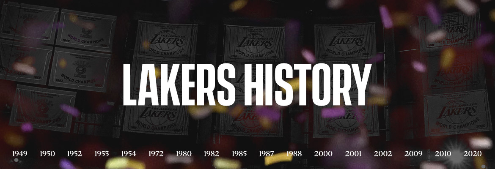

Historia
Records | Iconos | Jugadores

Records | Iconos | Jugadores
Decir Los Angeles Lakers es mencionar a un pedazo de la historia más rica y prestigiosa de la NBA. Una franquicia icónica y con tantas etapas para el recuerdo que se necesitarían páginas y páginas para ubicar todo el recorrido de una organización como pocas en la liga. Un equipo que, después de la peor sequía de su historia, regresó a los Playoffs en 2020 y conquistó el 17° anillo que le permitió igualar a Boston Celtics en la cima de los máximos campeones.